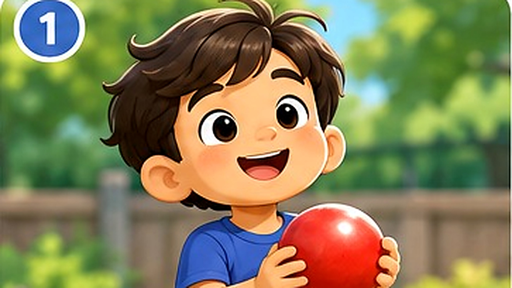

Rohan and His Red Ball
Look at the pictures. Listen, talk about what happened, and tell the story in your own words.

PICTURE 1 OF 5
Rohan had a red ball.
🧩 Put the story in order
Tap a picture to look at it again. Say what happened first, next, and last.
🎤 Your turn: tell the story
Use the pictures as clues. It is okay to tell just one idea at a time.
🟦 First…
🟧 Then…
🟪 Next…
🟩 After that…
Finally…
Parent prompt: “Tell me about the pictures.” Wait quietly for 5–10 seconds.
🌱 Parent guide: help without turning it into a test
- Read together first. Talk about the pictures; do not demand a full retell on the first reading.
- Use a prompt ladder: wait → open question → two choices → first few words → model the sentence.
- Accept small attempts. A word, gesture, or point is communication. Expand gently: “Yes, red ball!”
- Retell together. You tell one picture, then invite your child to tell the next. Gradually reduce your help.
- Keep it short and positive. Five to eight minutes is plenty.
Look for progress: identifying a character, naming an action, answering “what happened?”, and putting two or three events in order. Independent full retelling comes later.